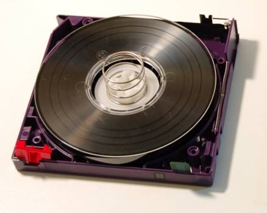
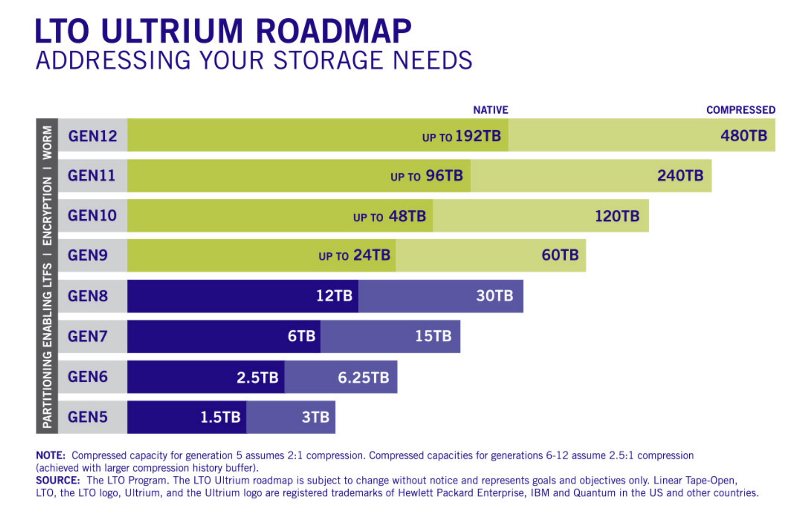
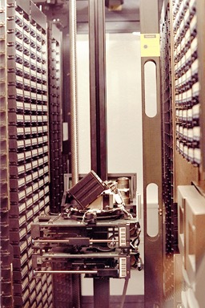

Hardware para backup
Temas de ENCO · 13/13
- 1. Formatos de Servidores - Racks y Blades
- 2. Centros de Procesamiento de Datos (CPDs)
- 3. Virtualización de Servidores
- 4. Dispositivos de Almacenamiento
- 5. Subsistemas de Disco
- 6. Fibre Channel y redes SAN
- 7. Almacenamiento IP
- 8. Sistemas de ficheros y almacenamiento en red
- 9. Virtualización del almacenamiento
- 10. Backup
- 11. Backup en red y software para backup
- 12. Archivado de la información
- 13. Hardware para backup
13.1 Requisitos
Un hardware de backup debe ofrecer fiabilidad, funcionamiento continuado, velocidad de transferencia, flexibilidad, lectura/escritura en tiempo real, capacidad, posibilidad de extraer el medio y un coste razonable.
13.2 Soportes físicos
13.2.1 Cintas
Son dispositivos de almacenamiento secuencial, en cartucho o cassette. Deben recibir datos a velocidad constante: si los datos no llegan a tiempo, la unidad tiene que parar, rebobinar parcialmente y volver a arrancar, un vaivén llamado shoe-shining ("sacar brillo a los zapatos") que reduce rendimiento y desgasta la cinta.
Formatos más populares:
- DDS (Digital Data Storage): usa el formato de las cassettes DAT; lentas pero baratas.
- LTO (Linear Tape Open): las más usadas; rápidas, de gran capacidad, en cartucho y a precio asequible (LTO Gen9: 18 TB nativos, 45 TB comprimidos, 400 MB/s).


Capacidad nativa/comprimida: GEN5 1,5/3 TB, GEN6 2,5/6,25, GEN7 6/15, GEN8 12/30, GEN9 24/60 (previsto), GEN10 48/120, GEN11 96/240, GEN12 192/480. Compresión 2:1 en GEN5 y 2,5:1 desde GEN6.note
La diapositiva de texto da 18 TB para LTO-9 (la capacidad real comercializada); la hoja de ruta muestra los 24 TB que se planeaban.
Vida de una cinta según las primeras generaciones:
| Tipo | Capacidad nativa | Pistas totales | Pistas por pasada | Pasadas para llenarla | Pasadas totales | Escrituras/lecturas totales | Años (llenándola 1 vez/mes) | Años (1 vez/semana) |
|---|---|---|---|---|---|---|---|---|
| LTO-1 | 100 GB | 384 | 8 | 48 | 9600 | 200 | 17 | 4 |
| LTO-2 | 200 GB | 512 | 8 | 64 | 16000 | 250 | 21 | 5 |
| LTO-3 | 400 GB | 704 | 16 | 44 | 16000 | 364 | 30 | 7 |
| LTO-4 | 800 GB | 896 | 16 | 56 | 11200 | 200 | 17 | 4 |
| LTO-5 | 1500 GB | – | – | – | – | – | – | – |
13.2.2 Discos ópticos
Algo más flexibles que las cintas con la velocidad de escritura, permiten acceso aleatorio al recuperar y son un formato muy extendido, pero más caros y a menudo menos fiables. Hoy se usan soluciones como el Optical Disc Archive de Sony (hasta 5,5 TB por cartucho, 2021).
13.2.3 Discos duros
Son muy baratos y cada vez más usados para backup: se puede usar un NAS o la SAN, idealmente con RAID. Las VTL (Virtual Tape Library) son bibliotecas de cintas virtuales que en realidad guardan en discos duros (el software de backup cree hablar con cintas); suelen ser bastante caras.
13.3 Robotización y bibliotecas
Las bibliotecas robotizadas gestionan muchísimos volúmenes con acceso aleatorio; algunas los etiquetan o los comparten con otras bibliotecas, y las más avanzadas se llaman silos.

La gestión puede ser in-band (comandos SCSI por iSCSI o FC) u out-band (interfaces propietarias por TCP/IP o RS-232). Las cintas se identifican con etiquetas externas (códigos de barras impresos por la biblioteca) o internas (en la propia cinta o en un chip del cartucho).
13.4 Soportes para archivado
Para archivar hacen falta soportes WORM (Write Once, Read Many).
| Criterio | Discos duros | Soporte óptico | Cintas |
|---|---|---|---|
| Protección WORM | Software | Hardware | Hardware |
| Escalabilidad | Alta | Baja | Alta |
| Cumplimiento legal | No aceptado en general | Generalmente aceptado | No aceptado en general |
| Coste de adquisición | Medio | Bajo | Medio |
| Coste de operación | Alto | Bajo | Bajo |
| Tiempo de acceso | Rápido | Medio | Lento |
| Velocidad de transferencia | Alta | Baja | Alta |
| Alta disponibilidad | Muy buena | Baja | Buena |
| Robustez del soporte | Mínima | Alta | Media |
| Reutilizable | Sí | No | No |
Ventajas del almacenamiento removible: se puede guardar en otro lugar (a salvo de desastres), al estar off-line resiste mejor los ataques, miles de cintas no consumen energía (cientos de discos, muchísima) y una biblioteca removible es más barata que una red con muchísimos discos. Conclusión:
- Discos: retención corta y cuando prima la velocidad de acceso.
- Ópticos: pocos datos durante mucho tiempo.
- Cintas: muchos datos durante mucho tiempo, sobre todo si se accede poco.
13.5 Compresión, deduplicación y cifrado
13.5.1 Compresión
Reduce el volumen pero añade latencia al leer y escribir: no se recomienda para almacenamiento general, sí para backup y archivado. Dónde hacerla:
| Dónde | A favor | En contra |
|---|---|---|
| Cliente | Reparte la carga entre clientes; reduce el tráfico de red | Carga la CPU de los clientes |
| Servidor | Libera a los clientes | Sobrecarga la CPU del servidor y la red lleva datos sin comprimir |
| Unidad de cinta | Por hardware: libera clientes y servidor | Throughput impredecible; posible shoe-shining |
13.5.2 Deduplicación
En sistemas grandes, los mismos archivos aparecen en muchos sitios: de media cada dato se repite unas 20 veces. La deduplicación guarda una sola copia y sustituye las demás por un enlace, detectando repeticiones con hashing. La forma más simple trabaja con archivos repetidos; la más eficiente, con bloques repetidos.
Los productos se diferencian en si son HW o SW, sobre qué trabajan (VTL, NAS, SAN), el algoritmo de hash (SHA-1, MD5 o propio), si deduplican inline (al escribir) o en postproceso (después), y si lo hacen en la fuente (cliente) o en el objetivo (destino). Ejemplos: Data Domain (HW, VTL y NAS, SHA-1, inline, objetivo), EMC/Avamar (SW, SHA-1 y MD5, inline, fuente), Symantec (SW, SHA-1, inline, fuente), NetApp (SW en el SO, NAS/SAN, propio, ambos), Quantum (ambos, VTL y NAS, MD5, ambos, objetivo).
Analogía
En una oficina con 20 copias impresas del mismo manual, la deduplicación guarda una en la estantería y deja en las otras 19 mesas una nota: "el manual está en la estantería".
13.5.3 Cifrado
Backups y archivos suelen ser confidenciales, y los soportes se pierden o roban. Solución: cifrar todas las copias, por hardware (en la unidad de cintas o en la biblioteca) o por software (en clientes o servidores; AMANDA y Bacula lo soportan).
13.x Ideas clave
- Requisitos: fiabilidad, continuidad, velocidad, flexibilidad, tiempo real, capacidad, medio extraíble, coste.
- Cintas: secuenciales, necesitan velocidad constante (shoe-shining); DDS (lenta y barata) y LTO (la más usada; LTO-9 18/45 TB, 400 MB/s).
- Ópticos: acceso aleatorio, caros y menos fiables (Sony ODA 5,5 TB). Discos: baratos, NAS/SAN con RAID; VTL emula cintas sobre discos.
- Bibliotecas/silos robotizados; gestión in-band (SCSI) u out-band; etiquetas de código de barras o chip.
- Archivado necesita WORM: ópticos (aceptados legalmente, robustos), cintas (muchos datos, poco acceso), discos (rápidos, retención corta).
- Compresión en cliente, servidor o cinta; deduplicación por hash (archivo o bloque; inline/postproceso; fuente/objetivo; ~20 copias de media); cifrado HW o SW.